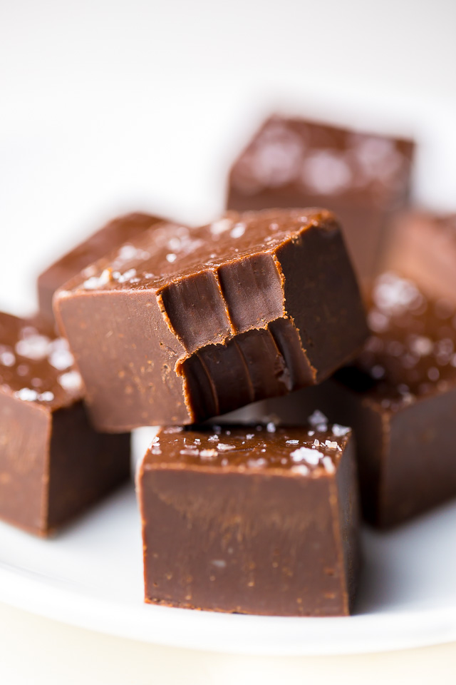

Aunt Teen's Creamy Chocolate Fudge

Aunt Teen's Chocolate Fudge
A recipe to spice up your holidays. Made with real chocolate, nuts, and
vanilla. It will make your whole family desire to come to your house these
holidays.
Ingredients
- 1 1/2 cups of white sugar
- 1 (7 ounce) jar marshmallow creme
- 2/3 cup evaporated milk
- 1/4 cup butter
- 1/4 teaspoon salt
- 2 cups milk chocolate chips
- 1 cup semisweet chocolate chips
- 1/2 cup chopped nuts
- 1 teaspoon vanilla extract
Steps
- Line an 8-inch square pan with aluminum foil; set aside.
-
Combine sugar, marshmallow cream, evaporated milk, butter, and salt
together in a large saucepan over medium heat; bring to a full boil and
cook for 5 minutes, stirring constantly.
-
Remove from heat and add milk chocolate chips and semisweet chocolate
chips; stir until chocolate is melted and mixture is smooth. Stir in
nuts and vanilla. Pour into prepared pan; chill in refrigerator for 2
hours, or until firm.